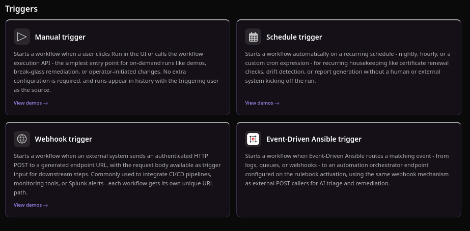
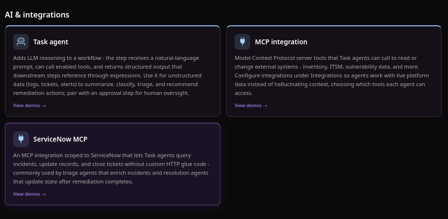
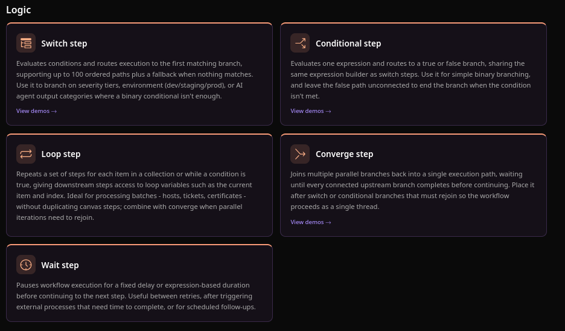
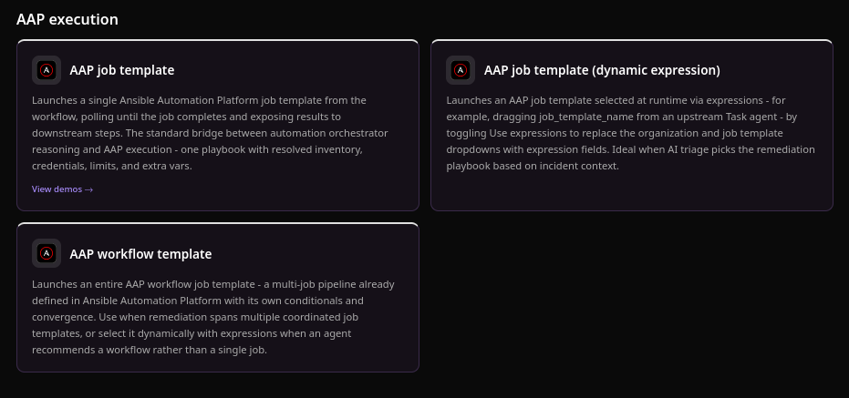
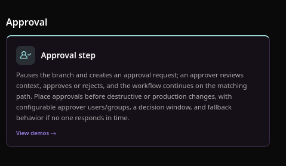

How to Build a Workflow on the Canvas
-
Configure: Open the Workflow Builder and set your trigger step every workflow must begin with one.
-
Add Steps: Click Add Step in the top toolbar to open the step palette. Select the step type you need and it is added to the canvas or you can also just click the plus icon next to an existing step.
-
Connect: Draw lines between steps to establish the execution sequence and data flow direction.
-
Configure Each Step: Click a step to open the details panel. Set parameters, reference upstream data from the Input panel, and define output schemas where applicable.
-
Execute: Save the workflow to create a version, verify it for errors, then run it manually to test or publish it for automated triggering.
Lets understand the canvas steps with a bit more detail:
Part 1. Triggers Where Every Workflow Begins

Every workflow must start with a trigger step. When you open the Workflow Builder, the trigger panel is already open on the right, waiting for you to configure it. There is no workflow without a trigger.
The automation orchestrator supports four trigger types:
Manual: A user clicks Run in the UI or calls the workflow run API directly. No additional configuration needed. Use this for on-demand tasks, ad hoc troubleshooting, or operator-initiated changes.
Schedule: The workflow runs automatically at a recurring time or interval. You can define schedules using a visual builder (minutely, hourly, daily, weekly, monthly, yearly) or a custom cron expression. Both support time zone selection and a missed-schedule behavior policy.
Webhook: An external system triggers the workflow by sending an HTTP POST to the webhook URL. AO generates the URL and an authentication token for you. Use this when you want an external tool: a ticketing system, a monitoring platform, a CI/CD pipeline to initiate your workflow.
Event-Driven Ansible: The workflow starts in response to an event processed by Event-Driven Ansible. This is your real-time, event-reactive trigger. When something happens in your environment and EDA processes it, AO can immediately kick off the appropriate workflow response.
Regardless of trigger type, you can always run any workflow manually by clicking the Run button. The trigger type defines the default behavior, not a restriction.
Part 2. AI Task Agent Steps Where Intelligence Enters the Workflow

The AI task agent step is one of the most powerful and newest capabilities in the automation orchestrator. It allows you to include an AI model as an active participant in your workflow, not just a passive tool.
When a workflow reaches a task agent step, the AI model receives a prompt, reasons through it, calls tools if needed, and returns a structured response that downstream steps can use.
Writing the Prompt
The prompt is your instruction to the AI agent. Think of it as the task brief. A well-written prompt:
Clearly states what the agent needs to do Provides relevant context from upstream steps using dynamic references Defines the expected output format using a response schema
For example, rather than saying "analyze this log", you would write: "Review the following log output from the previous step and identify the root cause of the error. Return your findings as a JSON object with fields: root_cause, affected_component, and recommended_action."
The response schema locks the agent’s output into a predictable structure, so downstream steps know exactly what fields to reference.
Connecting MCP Tools to the Agent
Model Context Protocol (MCP) tools extend what the agent can do. Instead of just reasoning over text, the agent can actively call tools, querying systems, fetching live data, or triggering actions as part of its reasoning process.
You connect MCP tools to a task agent step by configuring an MCP server integration in the Configuration section, then selecting it within the task agent step parameters. Once connected, the agent can call those tools during its reasoning loop — for example, querying a CMDB, looking up a ticket, or checking host inventory — before producing its final output.
When configuring a task agent step, you can select specific tools from the MCP server rather than granting access to all of them. This follows a least-privilege approach and the agent can only call the tools it actually needs for that step. Limiting tool access also reduces LLM token consumption, since every tool call the agent makes adds to the cost of that step.
Because AI agents can call tools and take actions, the automation orchestrator wraps them in a governed workflow context. Every tool call, reasoning step, and output is logged and visible in the execution viewer under the Agent steps tab.
Part 3. The Logic Step Conditional Branching

The switch step lets your workflow make decisions and take different paths based on data. Think of it as a traffic director depending on what value comes in, execution goes down one of several defined branches.
Step |
Use When |
Switch |
You have three or more possible paths based on a data value |
Conditional |
You need a simple true/false branch |
Wait |
You need to pause before the next step runs |
Converge |
You need to rejoin parallel branches into one path |
For each loop |
You need to repeat an action for every item in a list |
While loop |
You need to repeat an action until a condition is met |
Part 4. Launching an AAP execution

The Automation Execution template step is how the automation orchestrator hands work back to Ansible. You are not replacing Ansible, you are calling it from within your orchestrated workflow.
To add this step:
-
Click Add Step and select AAP Execution → Ansible Automation Platform job template from the step palette
-
In the details panel, select your Integration — this is the AAP integration configured under Configuration → Integrations
-
Click Set up connection and select the credential to authenticate to your AAP instance
-
Choose the organization and job template you want to run
-
Optionally pass extra variables from upstream steps as inputs to the job using dynamic field references
-
The step dispatches the job to automation controller through automation gateway, monitors its progress, and captures the output — making it available for downstream steps to reference
By default, an AAP job template step captures job metadata as output i.e. status, job ID, and timestamps. To pass structured data back to the automation orchestrator workflow, your playbook must use the Ansible set_stats module. Any values set with set_stats appear in the artifacts field of the step’s output and can be referenced by downstream steps using expressions. Without set_stats, your playbook results stay inside AAP and are not accessible to the rest of the workflow.
You can also use AAP Execution → Ansible Automation Platform workflow template if you want to launch an entire AAP workflow, not just a single job template.
The AAP job template step supports retry policy configuration. If a job fails due to a transient error, you can configure the step to automatically retry with exponential backoff before marking the workflow step as failed.
Part 5. Human Approval Steps Putting People in the Loop

Not everything should be fully automated. The human approval step pauses workflow execution at a defined point and waits for a person to approve or reject before continuing.
This is particularly valuable for high-risk changes, compliance-sensitive operations, or situations where human judgment is required before automation proceeds.
When a workflow reaches an approval step:
-
An approval request is created and visible in the Approvals page in the sidebar
-
Users with the
approval:decidepermission, or any named approvers and approval groups configured on the step, are notified. -
The workflow execution shows a Waiting for approval status
-
Once approved or rejected, the workflow continues down the appropriate path
You can configure:
Specific named approvers or approval groups directly on the approval step, or allow any user with the approval:decide permission to decide
A decision window (timeout) after which a fallback decision is applied automatically
Context information so approvers understand what they are approving
What Building a Workflow Actually Looks Like
Here is the typical sequence you follow when building a workflow on the canvas:
-
Open the Workflow Builder and configure your trigger step
-
Click Add Step in the top toolbar to open the step palette, or click the plus icon next to an existing step, and choose your first action
-
Connect steps by drawing lines between them on the canvas
-
Click each step to open the details panel and configure its parameters
-
Reference upstream data by copying field paths from the Input panel into parameter fields
-
Add logic flow conditions, switches, loops to shape your logic
-
Save to create a new version, then Verify to check for errors
-
Run to test, then Publish when ready for production
As your workflow grows, the canvas gives you a clear visual map of the entire automation every step, every connection, every branch all in one place.